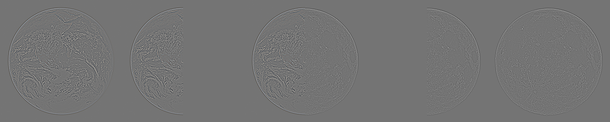
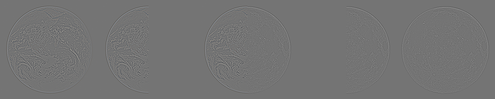

PROJECT TWO
Part 1.1
Below is my implementation of convolution using numpy:
Below you can visually see a comparison between numpy with 4 for loops, numpy with 2 for loops, and the scipy.signal.convolve2d function:
The numpy 4 for loop runtime was longer than the numpy 2 loop and scipy functions. My numpy implementations use zero-padding whereas the scipy.signal.convolve2d function has different options such as fill, wrap, or symmetrical.


 
